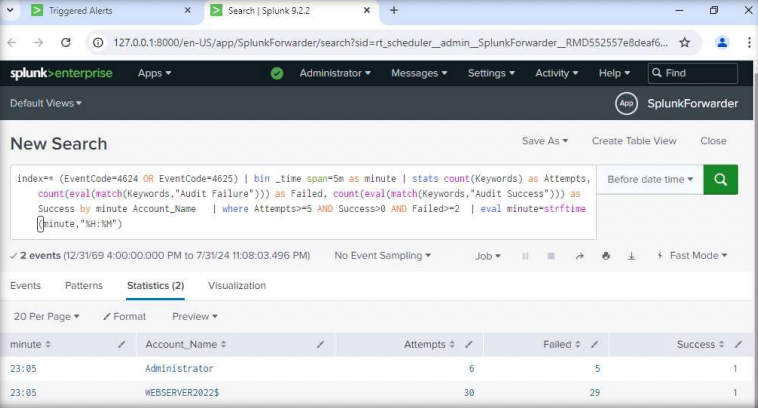
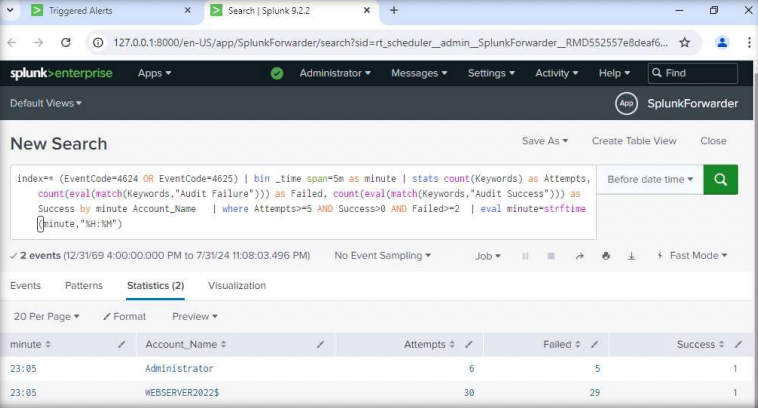

$ cat splunk-bruteforce-usecase.txt
Title:
Splunk Use Case: Detecting and Generating Alerts on Brute-Force Attempts
Objective:
Detect repeated failed authentication attempts and generate alerts using Splunk.
Overview:
Brute-force attacks attempt multiple login combinations to gain unauthorized access.
Early detection helps prevent account compromise and reduces attacker dwell time.
Data Source:
- Windows Security Event Logs (Event ID 4625)
- Authentication logs ingested into Splunk
Detection Logic:
- Multiple failed login attempts from the same source
- Threshold-based detection within a defined time window
- False positive reduction through filtering and correlation
Splunk Query (Initial Detection):
index=windows sourcetype=WinEventLog:Security EventCode=4625 | stats count by Account_Name, Source_Network_Address | where count > 5
Improved Detection Logic:
Detection was enhanced using time-based aggregation and success vs failure
correlation to reduce noise and improve alert accuracy.
index=* (EventCode=4624 OR EventCode=4625)
| bin _time span=5m
| stats count as Attempts,
count(eval(match(Keywords,"Audit Failure"))) as Failed,
count(eval(match(Keywords,"Audit Success"))) as Success
by _time, Account_Name
| where Attempts > 5 AND Failed > 2
Alerting:
- Alert triggered when failed login attempts exceed defined threshold
- Severity set to Medium
- Integrated into SOC alert triage workflow
Blue Team Takeaway:
This use case demonstrates how SIEM-based detections help identify credential
abuse early, reduce attacker dwell time, and support effective SOC response.
 
